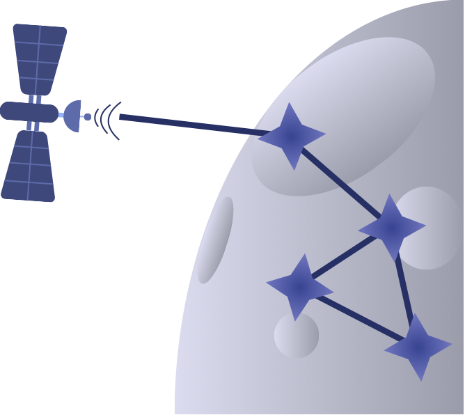
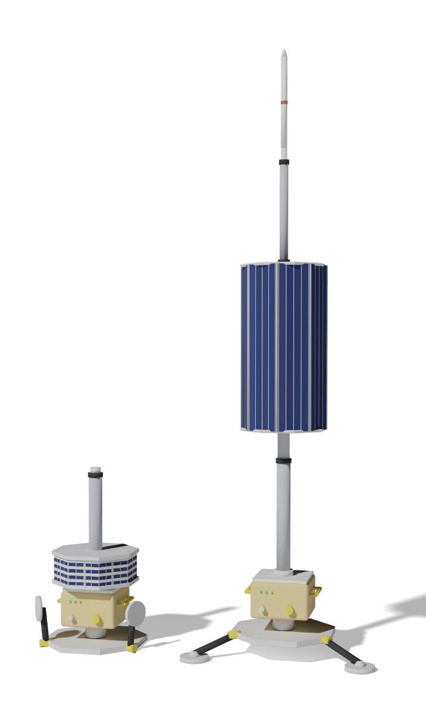
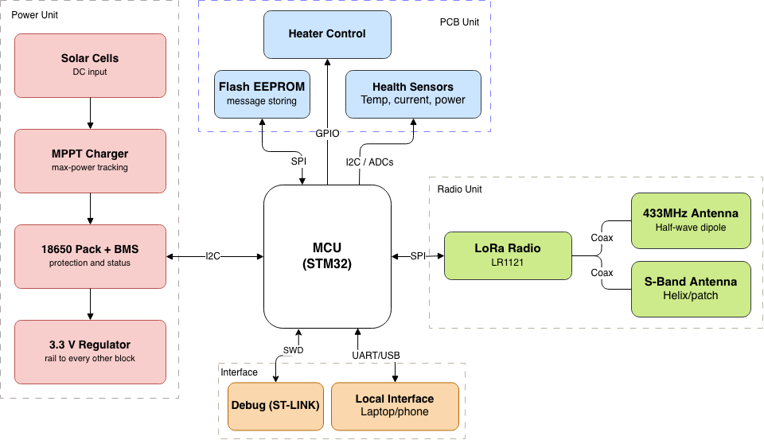

Find nearby nodes
Nodes discover neighbors and estimate link quality to build a picture of the network.

Lunar LinkLunar Link · Capstone project
Four or more surface nodes that discover one another, route messages over multiple hops, and hold messages through outages.
01 — Abstract
Crews, rovers, and science stations on the Moon need to exchange messages without depending on an orbiting relay or a single base station. Lunar Link is a prototype decentralized mesh network of four or more identical surface nodes. Each node carries an ultra-low-power STM32 microcontroller, a multi-band LoRa radio with a 433 MHz surface link and an S-band relay link, and a solar-charged 18650 lithium-ion pack, inside an insulated and radiation-shielded enclosure with a battery heater. Nodes discover their neighbors automatically, route messages over multiple hops, reroute around failed nodes, and hold undelivered messages through an outage until a path returns.
Prototype hardware
Two concepts for the lunar surface node enclosure and antenna mast.

02 — Features
Nodes discover neighbors and estimate link quality to build a picture of the network.
Multi-hop routes adapt when a node or radio link becomes unavailable and an alternate path exists.
Messages can wait for a route to return, then forward automatically with delivery receipts.
A radio-agnostic C11 library separates mesh behavior from board and radio drivers.
03 — System diagram
The diagram shows the power, processor, radio, and interface blocks in a Lunar Link node.

04 — Fall schedule
| Week | Work | Status / deliverable |
|---|---|---|
| Week 4 | Initial project definition and planning scope, pick finalized parts, and the RF trade study of 433 MHz, 915 MHz, 2.4 GHz, and 5.8 GHz. | Done |
| Week 5 | Radio license earned. Protocol library, simulator, board firmware, and browser interface written. Lunar propagation study done. Order the LR1121 evaluation board, Nucleo boards, 18650 cells, and BMS. | Done. Non-power hardware ordered. |
| Week 6 | Get two boards communicating, run the interface over USB against a board, and measure airtime. | Two boards talking and the interface showing a live node. |
| Week 7 | Gain, range, and power testing, LR1121 sensitivity, power budget v1, and the presentation. | Power budget v1 and range data. |
| Week 8 | Four nodes running on dev boards, schematic v1 with a bill of materials, and a design review. | Four nodes routing and the schematic reviewed. |
| Week 9 | Finish firmware features and rehearse the demonstration (short week, Thanksgiving). | Demonstration runs end to end. |
| Week 10 | Fall demonstration of discovery, multi-hop, rerouting, outage, and recovery, with the final requirements list and the schematic ready for Winter Quarter. | Demonstration |
05 — Parts
| Subsystem | Development (Fall) | Final (custom PCB, Winter) |
|---|---|---|
| Microcontroller | STM32 Nucleo-L4 | Ultra-low-power STM32 (U0 is the leading candidate) |
| Radio | REYAX RYLR999 LoRa, 915 MHz | Semtech LR1121 LoRa, 433 MHz, +22 dBm (plus S band link) |
| Antenna | Vertical half-wave dipole, omnidirectional | Same, on a telescoping mast (plus helix or patch for sat comms) |
| Power | 18650 Li-ion, BMS, fuel gauge | Plus solar panels, MPPT charger, battery heater |
| Enclosure | Sealed box | Aluminum shell, multilayer insulation, radiator face |
The protocol layers and host simulator are implemented. Firmware builds for the target board, but the radio drivers have not yet been tested on physical hardware.
Build notes06 — People
07 — Latest update · 02 Nov 2026
Added an LR1121 driver with channel sensing and a fake-chip test. Hardware bring-up is still ahead.
Follow project updatesProject resources